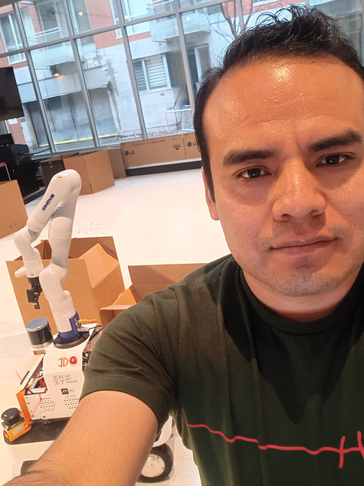
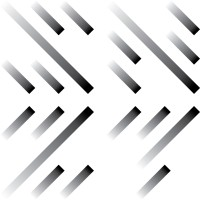
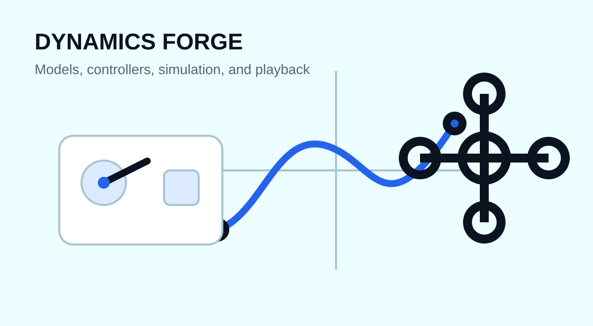

Robotics Software Engineer | Montréal, QC, Canada
David Bedolla, PhD
Real-Time Robotics Software | Motion & Control | Hardware Deployment
I build and deploy robotics software that turns kinematic and dynamic models into reliable motion on physical systems. My work combines C++, ROS 2, LabVIEW, model-based control, redundancy resolution, hardware integration, and measurable real-time performance.

Robotics Software Engineer

Lab INIT RobotsAbout
Turning robot models into fast, testable software for real hardware.
I am a robotics software engineer with applied R&D experience across the full path from mathematical modeling to deployment on real hardware. I design kinematics and dynamics algorithms, deterministic motion and control software, hardware interfaces, and validation workflows using C++, ROS 2, LabVIEW RT and FPGA, MATLAB and Simulink, and Python.
At Lab INIT Robots, I develop whole-body motion, Cartesian control, redundancy resolution, and safety-oriented command systems for a Kinova Gen3 mobile manipulator. My academic background adds depth in learning-based rehabilitation robotics, while my engineering focus stays on runtime performance, integration, testing, and dependable behavior on physical systems.
Selected engineering work
Research and engineering work
Applied robotics work framed around the engineering problem, implementation, and measurable result.

Mobile manipulation
Whole-Body Control for a 10-DoF Robot
Built and deployed a 400 Hz ROS 2 and C++ control pipeline coordinating a Kinova Gen3 arm and mobile base, with deterministic redundancy resolution, safe command transitions, and Cartesian tracking.
- ROS 2, C++, Pinocchio
- Redundancy resolution in 3 μs
- Super-twisting Cartesian control

Rehabilitation robotics
Learning-Based Upper-Limb Rehabilitation
Implemented human-like inverse kinematics and robust learning-based control for a 7-DoF rehabilitation exoskeleton, then validated the algorithms in hard real-time hardware operation.
- Gaussian Process modeling
- 43 μs inverse kinematics
- Real-time predictive control

Simulation platform
Dynamics Forge
Developed a reusable dynamics and control platform for copters, drones, pendulums, cart-pole systems, and manipulators, with interactive testing, plotting, playback, and a C++ backend.
- Analytical dynamic models
- Interactive teaching simulations
- Python GUI and C++ backend

Robotics tooling
Automatic Kinematics and Dynamics Tools
Created symbolic tools that shorten robot-model setup, support inverse-kinematics validation, and generate efficient dynamic expressions for serial and branched systems.
- Standard and Modified DH
- Recursive Newton-Euler methods
- Symbolic optimization
Video portfolio
Robotics systems in motion
Demonstrations of control, simulation, and hardware implementation. New videos can be added without changing this page.
Loading video portfolio…
Experience
Applied robotics R&D delivered on real hardware
2026-Present
Associate Researcher
Lab INIT Robots, Montreal
Delivering whole-body control and mobile-manipulation software for a Kinova Gen3 system, including ROS 2 and C++ integration, deterministic redundancy resolution, and safety-oriented commands.
2025
Postdoctoral Researcher
École de technologie supérieure, Montreal
Improved control latency and tracking, strengthened real-time scheduling, and delivered reusable symbolic dynamics and inverse-kinematics tools for multiple robotics collaborations.
2024
Research Professor
Universidad Tecnológica de la Mixteca, Mexico
Developed and tested 7-DoF robot optimization, supported adaptive-gripper development, and led a multidisciplinary race-vehicle team through design, build, testing, and competition.
2020-2023
Research Assistant
École de technologie supérieure, Montreal
Built hard real-time exoskeleton software, digital twins, predictive control, and sensor-driven motion pipelines integrating EMG, IMU, and depth-camera data.
Selected publications
Research in intelligent rehabilitation and robot control
2023
Learning human inverse kinematics solutions for redundant robotic upper-limb rehabilitation
Engineering Applications of Artificial Intelligence, Volume 126, Part C, 106966.
Open DOI2023
Robust MPC with Integral Super-Twisting for Trajectory Tracking of an Exoskeleton Robot Arm
IEEE 14th International Conference on Power Electronics and Drive Systems.
Open DOI2024
Learning-Based Upper Limb Robotic Rehabilitation
Doctoral dissertation, École de technologie supérieure.
Repository link to be addedTechnical skills
Tools used across the robotics stack
Programming
C, C++, Python, MATLAB, LabVIEW, VHDL
Robotics
ROS 2, Pinocchio, URDF, real-time control, motion planning
Modeling and control
Kinematics, dynamics, RNEA, MPC, sliding-mode control, reinforcement learning
Simulation and hardware
Simulink, Simscape Multibody, LabVIEW RT and FPGA, DAQ, IMU, EMG, depth cameras
Contact
Let us build reliable robot motion from models to real hardware.
I am open to robotics software engineering and applied R&D opportunities involving real-time control, mobile manipulation, model-based algorithms, hardware integration, and human-robot interaction.